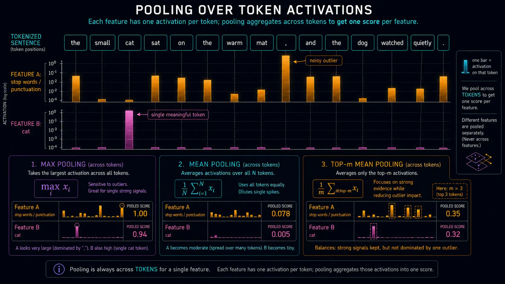

SAE Features Are Useful, But They Are Not Magic
Published
Sparse autoencoders make model internals feel almost clickable. You find a feature, read a neat label, look at top examples, and suddenly the transformer seems less like a giant matrix soup. That feeling is real. It is also a trap.
The Nice Story
The nice story is that sparse autoencoders give us something like model concepts. Train an SAE on activations, get a big sparse vector, inspect the active dimensions, and call those dimensions features. Some features really do look great. One fires on medical writing. Another on legal citations. Another on gendered names. Another on Python syntax. You retrieve the top activating examples and think: okay, this is the thing.
I still think this is one of the most useful interfaces we currently have for poking at language models. But after spending more time with SAE features, especially while trying to use them for gender-bias discovery and steering, my mental model has become much less clean.
A feature is not automatically a concept. A feature label is not ground truth. A high activation is not necessarily importance. And steering a feature is not the same as turning a simple semantic knob.

Problem 1: Features Are Not on the Same Scale
This is the first thing that breaks naive feature search. SAE features are not comparable just because they sit in the same vector. One feature might usually activate around 20. Another might usually activate around 900. With JumpReLU-style SAEs, even the effective lower bound is not uniform in the intuitive way you might expect.
That means “largest activation” is often a terrible ranking rule. You can ask for the top features on a prompt about gender bias and get generic junk: beginning-of-sequence features, newline features, punctuation, common words, chat-template artifacts, or broad syntax scaffolding. They win because they are frequent and high-scale, not because they are the thing you care about.
This is one reason I became more sympathetic to ugly-looking scoring formulas. For discovery, you often want something closer to:
score(feature, prompt)
= pooled_activation(feature, prompt)
* inverse_frequency(feature)
/ max_activation(feature)The exact formula is not sacred. The point is that raw activation magnitude is not enough. If you do not correct for scale and frequency, your “top features” list is partly just a list of what the model sees all the time.
Problem 2: Features Come in Wildly Different Shapes
SAE features are not all the same kind of object. Some are tiny surface-form detectors. Some are syntax. Some are common words. Some are specific phrases. Some are broad semantic regions. Some are weird numerical or formatting patterns. Some are probably mixtures we only call monosemantic because the top examples look coherent.
A toy example:
- a feature for the literal token
cat - a feature for phrases like “Siamese cat” or “stray kitten”
- a broader animal-with-whiskers feature that also weakly fires on “puma”
- an even broader pet / domestic animal / cute creature feature
These can all be real. They can also overlap. And they will not necessarily behave like clean variables in a human ontology.
The same thing happens with abstract topics. A feature labeled “discrimination” might not mean “make the model discriminatory.” It might mean “the text is discussing discrimination,” or “the model is entering anti-bias explanation mode,” or “this is a safety-policy-ish context,” or something even stranger. The label is a handle, not a definition.
Problem 3: Activations Are More Like Evidence Than Amounts
It is tempting to read a feature activation as a smooth amount of a concept. But many SAE features feel more like “some evidence for this pattern is present” than “there is exactly this much of the thing.”
If a dog feature activates on “one dog,” it does not follow that “two dogs” gives twice the activation. It might be similar. It might even be lower, depending on tokenization, context, and what the feature is actually detecting. If a feature is on, the model has found something related to the pattern. That does not mean the activation is a calibrated measurement.
This matters when people make plots that quietly assume linearity. If a feature is not linear in the human concept, then “more activation” does not necessarily mean “more concept.” It might mean more confidence, more prototypical phrasing, better token alignment, or just a more convenient anchor token.
Problem 4: One Prompt Is Almost Never Enough
A single example is noisy. This sounds obvious, but a surprising amount of feature interpretation still starts with “I ran one prompt and looked at what fired.”
If you want to find a cat feature, one image or one sentence about a cat is not enough. Maybe the top feature is actually “beginning of caption.” Maybe it is “orange object.” Maybe it is “cute animal.” Maybe it is a patch-position feature. The cat might be the biggest thing in the image and still not produce the biggest activation on the feature you think of as “cat.”
The better move is to use a diverse set of prompts where the target concept is the only shared factor. Ten to one hundred cat examples in different settings will average away a lot of junk. The same logic applies to bias, deception, refusal, tool use, or any other behavior. If your prompt set is narrow, your feature list will contain prompt artifacts.

Problem 5: Pooling Sounds Boring, But It Decides What You Find
When a prompt has many tokens, how do you turn a feature's per-token activations into one score?
Max pooling is seductive because it catches strong spikes. It also catches garbage spikes. A single weird token can dominate the whole score. Mean pooling has the opposite problem: if only three tokens matter and the prompt has eighty tokens, the signal gets diluted into mush.
I now like top-m pooling for many discovery tasks. Sort the feature's token activations, take the top few, and average them. This is not mathematically magical, but it often matches the practical question better: did the feature activate meaningfully somewhere in this prompt, without letting exactly one token decide everything?
In my own bias-feature search, this mattered a lot. Naive max ranking surfaced too much syntax and too many one-token artifacts. Top-m mean plus some rarity and max-activation normalization produced feature lists that were much closer to “semantically interesting enough to investigate.”
Problem 6: Token Positions Are Sneakier Than They Look
Another easy mistake: assume the last token contains the whole answer. Sometimes it does. Often it does not, especially in earlier or middle layers.
Transformers move information around. Some tokens become anchor points where task-relevant information accumulates. In chat models, special tokens, role markers, newlines, and answer-prefix tokens can become important. In vision-language setups, a patch with high activation is not necessarily the patch where the object “is.” Information can be routed through other positions.
This creates a very annoying interpretation problem. A feature can be genuinely related to your concept, but it might fire on a weird anchor token rather than the human-readable word. Or the human-readable word might fire weakly while the actual decision information sits somewhere else.
This is why masking matters. If you accidentally include padding, BOS tokens, chat-template tokens, or assistant-role markers in your analysis, your top features can be about the wrapper around the text instead of the text itself. That sounds like an implementation detail. It is actually an interpretability result waiting to be wrong.
Problem 7: Feature Names Are Not Ground Truth
Auto-interpreted feature names are useful. They are also dangerous. A name like “gender equality,” “discrimination,” or “leadership” gives your brain a story before the evidence deserves one.
In a recent gender-bias project, some features had labels that sounded extremely relevant but did not behave like clean bias controls. A “leadership” feature can activate on prompts about CEOs, but boosting leadership might affect both “men are CEOs” and “women are CEOs” in the same direction. That is not the bias difference you care about. It is just topic relevance.
The failure mode is subtle: the feature is not random, the label is not useless, and the examples may be genuinely related. It still might not be the causal lever.
So I now treat labels as search hints. They tell me where to look, not what to believe.
Problem 8: Detector Features Are Not Always Controller Features
A feature can confidently detect something without controlling the behavior you care about. This distinction matters a lot.
Suppose a feature fires on the name “John.” That does not mean steering the feature will make the model generate more Johns, become more masculine, change its answer to a gender-bias benchmark, or do anything visible at all. It may be a detector: useful for reading the model, weak for controlling it.
Conversely, a feature with a vague label might have a strong behavioral effect because it sits near a decision-relevant computation. Feature interpretability and feature causality are related, but they are not the same axis.
Problem 9: Steering Is Not “Set Feature to 1”
The common steering move is to add the SAE decoder direction for a feature into the residual stream. Operationally, if feature f has decoder vector W_dec[f], you add something like:
delta_h = lambda * steer_strength[f] * W_dec[f]
The steer_strength part matters. In practice, you usually want to scale by something like the feature's typical maximum activation from a larger dataset. That is effectively what many feature browsers do when they show steering examples. You are not just setting an abstract feature to 1.0. You are trying to add a direction at a scale the model can feel.
There is a nice equivalence here:
[0, 0, 1, 0, ...] * max_act * W_dec * lambda
== W_dec[i] * max_act * lambdaIn other words, you do not need a whole sparse-vector matrix multiplication to steer one feature. Just take the decoder row, scale it, and add it.
But the hard part is not the algebra. The hard part is choosing lambda.
Problem 10: Steering Strength Is an Unstable Parameter
Too little steering and nothing happens. Too much steering and the model falls off distribution, repeats itself, outputs broken text, or becomes impossible to evaluate. The frustrating middle is where most real experiments live.
Worse, “nothing happens” is ambiguous. Maybe the feature is not causal. Maybe the strength is too low. Maybe steering starts too late. Maybe the answer was already internally decided. Maybe your evaluation metric cannot see the change.
In long generations, steering can have a time profile that feels like this:
- at first, little visible effect
- then the steering starts to accumulate
- then it becomes too strong and degrades the output
One workaround is to decay steering over time. In our GenderBench experiments, we used an exponential schedule for open-text generation: the steering strength halves after about 250 generated tokens. This helped reduce late-generation degeneration. It did not solve the deeper problem.
Problem 11: Steering Can Arrive Too Late
This is probably the most important steering problem for benchmark tasks.
In yes/no or multiple-choice settings, the model often commits early. The visible answer might come out token by token, but the decision has already been shaped before the first answer token appears. If steering only changes the wording after that point, you can get a very misleading result: the explanation changes, the caveats change, the tone changes, but the answer does not.
This creates a nasty ambiguity. If a feature does not change the answer, did we find the wrong feature? Or did we intervene too late? Or too weakly? Or at the wrong layer? A negative steering result is not automatically a negative causal result.
Soft prefills can help expose early commitment. Prompts like “My tentative answer is” or “My first instinct is” can force the model to reveal an early decision. But prefills are not neutral either. Strong prefills can contaminate the baseline, which means you end up measuring the prompt trick instead of the feature.
Problem 12: The Sign Can Be Backwards
This one keeps showing up. A feature that looks like “sexism” or “discrimination” might not make the model more sexist when boosted. It might make the model more aware of sexism. Suppressing it might make the model less corrective and therefore more biased.
This is not just hypothetical. In our gender-bias steering tests, some features had counterintuitive signs. A feature with a discrimination-like interpretation could worsen behavior when suppressed, not boosted. The obvious story is that the feature may participate in recognizing or correcting biased framing rather than causing the biased answer directly.
Anthropic has reported similar sign weirdness in safety work: sometimes a feature that sounds dangerous is actually part of the model's safety-aware response mode. The name alone does not tell you which way to steer.
This is why I now think “find the bias feature and boost it” is too simple. You need to test both signs, and ideally test them per task family. One global sign may be too coarse.
What Actually Helps
After running into these problems, my current feature-search checklist looks something like this:
- use many diverse prompts, not one example
- mask padding, BOS, chat-template, and other non-content tokens
- use top-m pooling rather than pure max or pure mean
- normalize by feature scale, such as max activation on a general dataset
- downweight extremely common features with an IDF-like rarity term
- treat auto-interp names as hints, not facts
- test both steering signs
- evaluate behavior, not just examples
- track degeneration and undetected outputs, especially for open text
None of this makes SAE features clean. It just makes the failure modes less invisible.
The Bottom Line
SAE features are extremely useful. They give us handles inside models that we did not have before. But they are not little labeled sliders for human concepts.
They are learned directions in an activation space. They have scale problems, frequency problems, token-position problems, naming problems, and steering problems. Some are detectors, some are controllers, some are both, and some are probably artifacts of the data distribution or the interface we use to inspect them.
That does not make them useless. It makes them scientific objects. They need controls, baselines, counterfactuals, and behavioral tests.
The optimistic version is this: SAE features are not magic, but they are good instruments. And like any instrument, the real skill is not just reading the number. It is knowing when the instrument is lying to you.